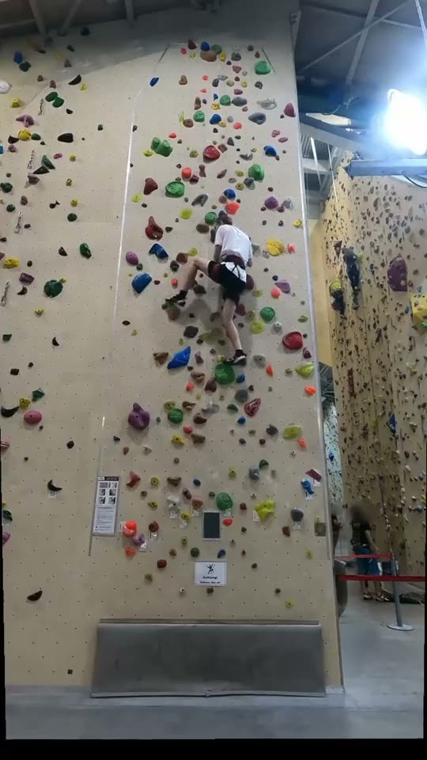

A · Clean editorial
White page, big black type, your photos full width. Lime only as a small accent; no mascot, no grid wash, no grey boxes. Calm and grown-up.
9:41●●●
Videos

Hardest sendOrange 5.9 · try 2
03videos
2/2routes topped
70%hips over feet
All videosSee all →



+
B · Night wall
Dark, like the gym in the evening. Photos glow, numbers in lime, chalk-white type. Easy on the eyes between tries.
9:41●●●
Videos
Hardest sendAll videos3 on video · 3 days by hand
03F6
S7
S8
M9
T10
W11
T12
Pinned
+
C · Chalk & route colour
Warm chalk-white page; each route card takes the colour of its holds (green, orange). One ink block for your count. Playful but less busy than now.
9:41●●●
Videos
03videos
+ 3 days by hand
+ 3 days by hand
Your routes
Green 5.8Topped · try 1
Orange 5.9Topped · try 2
+